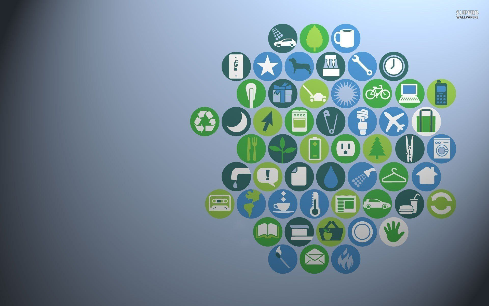

Saiba onde descartar corretamente o seu lixo!
O lixo é um dos maiores problemas ambientais da atualidade em todo o mundo. Com o aumento da produção industrial e do consumo, geramos uma quantidade gigantesca de resíduos sólidos que não são degradáveis pela ação da natureza.
Diante deste cenário, todas as pessoas devem ter a preocupação de gerar menos lixo (REDUZIR), dar uma nova utilização aos objetos evitando o descarte (REUTILIZAR) e, quando realmente o descarte for necessário, fazê-lo da forma correta para que ele seja reaproveitado de alguma forma (RECICLAR).